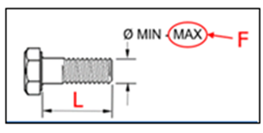
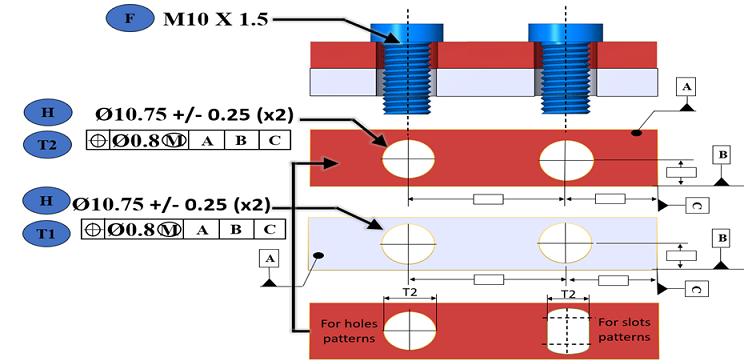
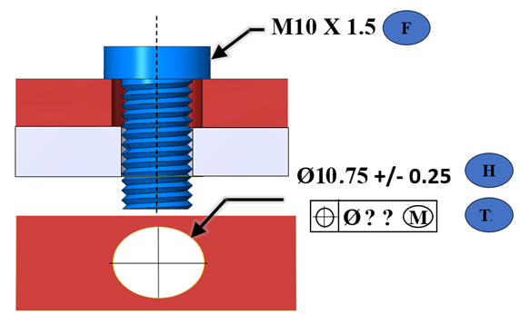
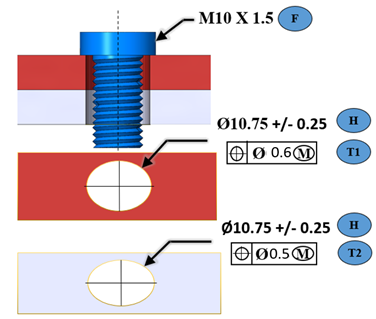
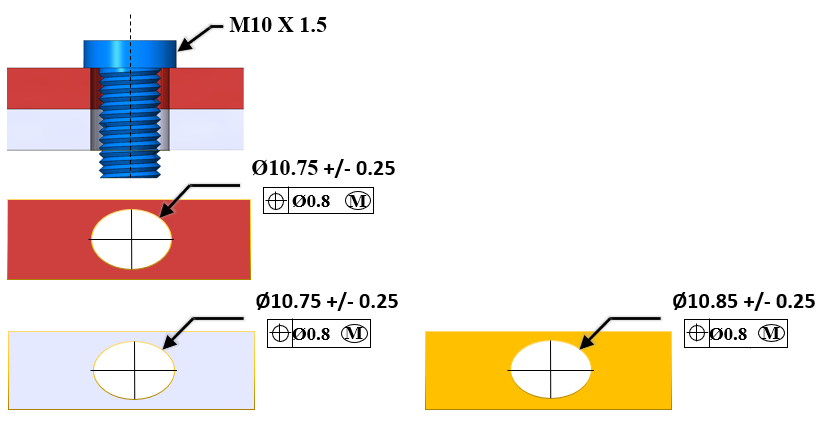
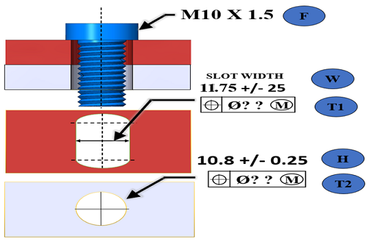
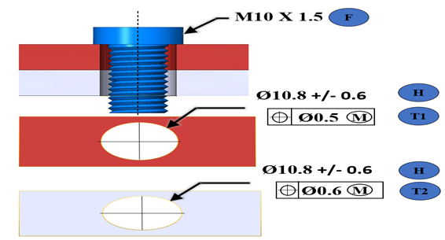
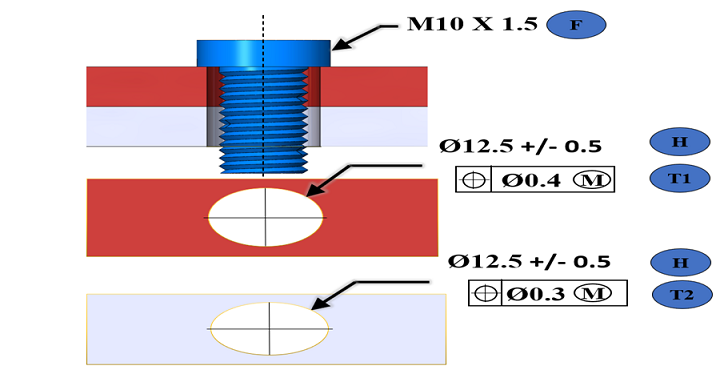
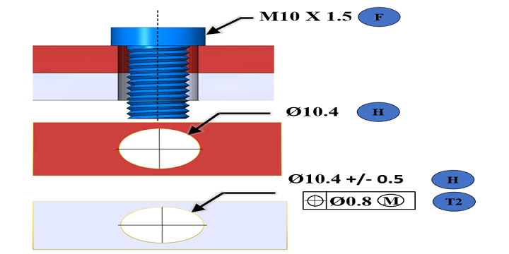
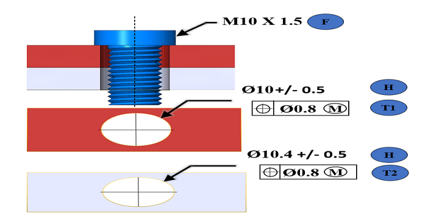

このルールは、3D PMI の公差データを確認し、以下の 2 点について妥当性を確認します。
F:留め具の最大径 および T:穴位置度 を変更しない前提で、クリアランス穴の最小径
F:留め具の最大径 および H:クリアランス穴の最小径 を変更しない前提で、穴の最大位置度公差
クリアランス穴の最小径（MMC）が留め具径の最大径（MMC）より小さい場合、基本的な組立条件が満たされていないため、このルールはアラートとしてフラグ付けします。
※MMC（Maximum Material Condition：最大実体状態）とは、部品が最も材料を多く含む状態を示し、穴では最小径、留め具では最大径を指します。
位置非拘束留め具アセンブリでは、すべての部品に留め具用のクリアランス穴があります。
位置非拘束留め具の計算式を使用すると、組立を確実にするために必要な適切なクリアランス穴の最小径、または最大位置度公差を算出できます。
この計算式は、形体が MMC の状態にあり、かつ位置度公差が極限の場合に「干渉ゼロ」のはめあいを提供します。
ねじ／ボルトの長さが胴径の 8 倍を超える場合、このルールは留め具の直進度偏差を考慮します。ボルトが長いと、同軸度が崩れやすくなります。

ねじ長さがねじ径の 8 倍を超える場合には、留め具の真直度偏差を考慮し、解析上の留め具最大径（MMC）として補正後の径（FD）を用いて評価を行います。
この場合は、留め具の真直度偏差を以下の方法で評価します。
L <= 305 mm の 場合
FD = F + L x 0.006
L > 305 mm の 場合
FD = F + L x 0.008
F = 留め具の最大径（MMC）
L = 留め具の長さ
FD = 真直度偏差を考慮した留め具径（包絡径）
CAD ファイル内の PMI データとしてすべての値（F、H、T）が利用可能な場合、
クリアランス穴の最小径（F および T を変更しない前提）に対する推奨値が提示されます。
同様に、穴の最大位置度公差（F および H を変更しない前提）をチェックします。
例:
T1 = T2 = T かつ H1 = H2
位置非拘束留め具の計算式: H = F + T

推奨インスタンス:
留め具の最大径-MMC（F）= 10.0 mm
クリアランス穴の最小径-MMC（H）= 10.5 mm
クリアランス穴の最大位置度公差（T）= 0.8 mm
クリアランス穴の最小径: H = F + T
実際の値（H）= 10.5 mm
推奨値（H）>= 10.8 mm（F および T の値を変更しない場合）
クリアランス穴の最大位置度公差: T = H - F
実際の値（T）= 0.8 mm
推奨値（T）<= 0.5 mm（F および H の値を変更しない場合）
クリアランス穴の位置度公差（T1）が欠落している場合、このルールは各プレートごとに個別の不合格インスタンスとして扱います。
このルールは値の算出に H = F + T の式を使用します。
例:
クリアランス穴の位置度公差が欠落しており、F と H の値が利用可能な場合。
T1 = T2 = T
位置非拘束留め具の計算式: H = F + T & T = H - F

推奨インスタンス:
留め具の最大径-MMC（F）= 10.0 mm
クリアランス穴の最小径-MMC（H）= 10.5 mm
位置非拘束留め具の計算式: T = H - F
実際の値（T）= 値が欠落しています
推奨値（T）<= 0.5 mm
クリアランス穴の位置度公差 T1 と T2 が異なる場合、このルールは値の算出に位置非拘束留め具の計算式 H = F + ½ (T1+T2) を使用します。
例:
T1#T2
位置非拘束留め具の計算式: H = F + ½ (T1 + T2)

推奨インスタンス:
留め具の最大径-MMC（F）= 10.0 mm
クリアランス穴の最小径-MMC（H）= 10.5 mm
クリアランス穴の最大位置度公差（T1）= 0.6 mm
クリアランス穴の最大位置度公差（T2）= 0.5 mm
クリアランス穴の最小径: H = F + ½ (T1 + T2)
実際の値（H）= 10.5 mm
推奨値 >= 10.55 mm（F、T1、T2 の値を変更しない場合）
クリアランス穴の最大位置度公差: T1 = 2H - 2F - T2
実際の値（T1）= 0.6 mm
推奨値（T1）<= 0.5 mm（F、H、T2 の値を変更しない場合）
クリアランス穴の最大位置度公差: T2 = 2H – 2F - T1
実際の値（T2）= 0.5 mm
推奨値（T2）<= 0.4 mm（F、H、T1 の値を変更しない場合）
2 枚を超えるプレートのアセンブリの場合、各プレートのクリアランス穴ごとに個別の不合格となります。
例:
H1#H2 および T1#T2
位置非拘束留め具の計算式: H = F + T
留め具、クリアランス穴、および（それらの）2 つのインスタンス間で個別に検証します。

推奨インスタンス 1:
留め具の最大径-MMC（F）= 10.0 mm
クリアランス穴の最小径-MMC（H）= 10.5 mm
クリアランス穴の最大位置度公差（T）= 0.8 mm
クリアランス穴の最小径: H = F + T
実際の値（H）= 10.5 mm
推奨値（H）>= 10.8 mm（F および T の値を変更しない場合）
クリアランス穴の最大位置度公差: T = H - F
実際の値（T）= 0.8 mm
推奨値（T）<= 0.5 mm（F および H の値を変更しない場合）
推奨インスタンス 2:
留め具の最大径-MMC（F）= 10.0 mm
クリアランス穴の最小径-MMC（H）= 10.5 mm
クリアランス穴の最大位置度公差（T）= 0.8 mm
クリアランス穴の最小径: H = F + T
実際の値（H）= 10.5 mm
推奨値（H）>= 10.8 mm（F および T の値を変更しない場合）
クリアランス穴の最大位置度公差: T = H - F
実際の値（T）= 0.8 mm
推奨値（T）<= 0.5 mm（F および H の値を変更しない場合）
推奨インスタンス 3:
留め具の最大径-MMC（F）= 10.0 mm
クリアランス穴の最小径-MMC（H）= 10.6 mm
クリアランス穴の最大位置度公差（T）= 0.8 mm
クリアランス穴の最小径: H = F + T
実際の値（H）= 10.6 mm
推奨値（H）>= 10.8 mm（F および T の値を変更しない場合）
クリアランス穴の最大位置度公差: T = H - F
実際の値（T）= 0.8 mm
推奨値（T）<= 0.6 mm（F および H の値を変更しない場合）
クリアランス穴の代わりにスロットが存在し、スロット幅に対する位置度公差が利用可能な場合。
H = スロット幅
T = スロット幅に対する位置度公差
T1 = T2 = T かつ H1 = H2
位置非拘束留め具の計算式 : H = F + T
例:
スロット幅およびクリアランス穴の位置度公差の両方が欠落していると仮定します。この場合、このルールは T1 = T2 = T という条件として扱い、値の算出に位置非拘束留め具の式 H = F + T を使用します。

スロット幅の推奨インスタンス:
位置非拘束留め具の計算式: H = F + T
留め具の最大径-MMC（F）= 10.0 mm
クリアランススロットの最小幅-MMC（H）= 11.5 mm
クリアランススロット幅の最大位置度公差: T = H – F
実際の値（T）= 値が欠落しています
推奨値（T）<= 1.5 mm（F および H の値を変更しない場合）
クリアランス穴の推奨インスタンス:
留め具の最大径-MMC（F）= 10.0 mm
クリアランス穴の最小径-MMC（H）= 10.55 mm
クリアランス穴の最大位置度公差: T = H – F
実際の値（T）= 値が欠落しています
推奨値（T）<= 0.55 mm（F および H の値を変更しない場合）
位置度公差の許容値が負（-ve）の場合、このルールはまず必要条件、すなわち T1+T2 = 2 (H-F) をチェックします。

上記の例の不合格メッセージは次のとおりです–
留め具の最大径-MMC（F）= 10.0 mm
クリアランス穴の最小径-MMC（H）= 10.2 mm
クリアランス穴の最大位置度公差（T1）= 0.5 mm
クリアランス穴の最大位置度公差（T2）= 0.6 mm
クリアランス穴の最小径: H = F + ½ (T1 + T2)
実際の値（H）= 10.2 mm
推奨値（H）>= 10.55 mm（F、T1、T2 の値を変更しない場合）
必要な最大値: T1 + T2 = 2 (H - F)
実際の値（T1 + T2）= 1.1 mm
推奨値（T1 + T2）<= 0.4 mm（F および H の値を変更しない場合）
このルールは、以下の条件が満たされると合格になります:
実際のクリアランス穴の最小径-MMC（H）が推奨値より大きい場合。
穴の位置度公差（T）の最大値が推奨値より小さい場合。

上記の例では-
クリアランス穴の最小径-MMC（H）>= 推奨値（H = F + T1 + T2）
12 mm >= 10.7 mm
クリアランス穴の最大位置度公差（T1）<= 推奨値（T1 = H - F - T2）
0.3 mm <= 1.7 mm
クリアランス穴の最大位置度公差（T2）<= 推奨値（T2 = H - F - T1）
0.3 mm <= 1.6 mm
穴に PMI が追加されているが、穴の直径寸法に対する直径公差値が欠落している場合、
以下の例文のようなメッセージが表示されます。
Maximum Diameter of Fastener-MMC (F) = 10.0 mm
Minimum Clearance Hole Diameter-MMC (H) = 10.4 mm
Diameter Tolerance value is missing for the clearance hole.
以下、例文和訳
留め具の最大径-MMC（F）= 10.0 mm
クリアランス穴の最小径-MMC（H）= 10.4 mm
クリアランス穴の直径公差値が欠落しています。

クリアランス穴の最小径（MMC）が留め具の最大径（MMC）より小さい場合、組立条件を満たさないためアラートとしてフラグ付けされます。
以下の例文のようなメッセージが表示されます。
Maximum Diameter of Fastener-MMC (F) = 10.0 mm
Minimum Clearance Hole Diameter-MMC (H) = 9.5 mm
Assembly condition is not satisfied as clearance hole diameter (MMC) is less than fastener diameter (MMC).
以下、例文和訳
留め具の最大径-MMC（F）= 10.0 mm
クリアランス穴の最小径-MMC（H）= 9.5 mm
クリアランス穴径（MMC）が留め具径（MMC）より小さいため、組立条件が満たされていません。

注記:
このルールは、DFMPro Settings に基づき、トップレベルのアセンブリ部品で実行できます。
チェックを正常に実行するには、アセンブリ内のボルト、ワッシャなどを識別するために、以下の前提条件が必要です。